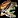
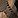
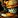
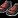
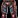

This MoP Classic Leatherworking leveling guide will show you the fastest and cheapest way to level Leatherworking up from 1 to 600 in Mists of Pandaria Classic.
This MoP Classic Leatherworking leveling guide will show you the fastest and cheapest way to level Leatherworking up from 1 to 600 in Mists of Pandaria Classic.
Shopping List
This is the list of the approximate materials required to level MoP Classic Leatherworking up to 600.
Classic
- 57x
 Ruined Leather Scraps
Ruined Leather Scraps - 300x
 Light Leather
Light Leather - 15x

Medium Hide - If one hide costs more than around 15 Medium Leather, just buy an extra 205x Medium Leather instead.
Medium Leather instead. - 110x Medium Leather
- 20x
 Heavy Hide
Heavy Hide - 195x
 Heavy Leather
Heavy Leather - 410x
 Thick Leather
Thick Leather - 426x
 Rugged Leather
Rugged Leather
TBC
- 280x
 Knothide Leather
Knothide Leather - 32x Fel Scales or another 110x Knothide Leather. Check both and buy the cheaper one.
WotLK
- 276x Borean Leather
Cataclysm
- 485x

Savage Leather - 2x
 Volatile Fire
Volatile Fire - 2x Volatile Air
- 2x Volatile Water
- 26x
 Volatile Earth
Volatile Earth
MoP Classic
- 100x Sha-Touched Leather
- 350x Mist-Touched Leather
- 1x
 Spirit of Harmony
Spirit of Harmony
Leatherworking trainers
You can learn Leatherworking from any of these NPCs below.
| Horde | Alliance | Both Factions |
|---|---|---|
| Orgrimmar: |
Stormwind City: |
Dalaran: Diane Cannings |
| Undercity: |
Ironforge: |
|
| Thunder Bluff: |
Darnassus: |
|
| Silvermoon City: |
The Exodar: |
Recommended Trainer
I recommend learning Leatherworking from Diane Cannings in Dalaran. The nearby supply vendor doesn’t sell Cataclysm recipes, so you won’t have to click through extra pages to reach the vendor materials.
The Auction House NPC Reginald Arcfire and the mailbox are also close by, so you can grab materials from the Auction House without running around too much.
If you have access to the Vale of Eternal Blossoms, just use the portal to Dalaran in the Shrine of Seven Stars or Shrine of Two Moons.
Leveling Cataclysm Classic Leatherworking
1 - 55
- 1-20
19xLight Leather - 57 Ruined Leather Scraps
Make the next recipe if you don't have Ruined Leather Scraps.
- 20-45 or 1-45
30x Light Armor Kit - 30 Light Leather
Light Armor Kit - 30 Light Leather
- 45-55
15x Handstitched Leather Cloak - 30 Light Leather, 15 Coarse Thread
Handstitched Leather Cloak - 30 Light Leather, 15 Coarse Thread
Journeyman Leatherworking
Visit your trainer and learn Journeyman Leatherworking. (Requires level 10)
- 55-100
50x
 Embossed Leather Gloves - 150 Light Leather, 100 Coarse Thread
Embossed Leather Gloves - 150 Light Leather, 100 Coarse Thread
- 100-115
15x
 Fine Leather Belt - 90x Light Leather, 30x Coarse Thread
Fine Leather Belt - 90x Light Leather, 30x Coarse ThreadKeep all of these! Don't sell or disenchant them. You'll need them later at 135.
- 115-122
15x
 Cured Medium Hide - 15x Medium Hide, 15x Salt
Cured Medium Hide - 15x Medium Hide, 15x SaltKeep these too! Make a few more from the previous recipe up to 120 if you couldn't get any Medium Hide.
- 122-135
15x
 Dark Leather Boots - 60 Medium Leather, 30 Fine Thread, 15 Gray Dye
Dark Leather Boots - 60 Medium Leather, 30 Fine Thread, 15 Gray Dye
Expert Leatherworking
Visit your trainer and learn Expert Leatherworking. (Requires level 20)
135 - 155
- 135-150
15x
 Dark Leather Belt - 15x Fine Leather Belt, 15x Cured Medium Hide, 30x Fine Thread, 15x Gray Dye
Dark Leather Belt - 15x Fine Leather Belt, 15x Cured Medium Hide, 30x Fine Thread, 15x Gray DyeMake this if you couldn't get Medium Hides:
17x
 Dark Leather Pants - 204x Medium Leather, 17x Gray Dye, 17x Fine Thread
Dark Leather Pants - 204x Medium Leather, 17x Gray Dye, 17x Fine Thread
- 150-155
7x
Heavy Leather - 35 Medium LeatherYou can also make:
7x
 Heavy Leather Ball - 14 Heavy Leather, 7 Fine Thread
Heavy Leather Ball - 14 Heavy Leather, 7 Fine Thread Pattern: Heavy Leather Ball is sold by
Pattern: Heavy Leather Ball is sold by  Bombus Finespindle in Ironforge and by
Bombus Finespindle in Ironforge and by  Tamar in Orgrimmar.
Tamar in Orgrimmar.
155 - 200
If you have no Heavy Hides, follow the "Leveling with Heavy Leather" route. If you get some, you can mix both routes. For example, if you get around 5 Heavy Hides, make 5x Cured Heavy hides, swap to the other route, then you you can stop making Dusky Bracers at 195 and switch to Guardian Gloves.
To decide which path is cheaper, compare the price of 20x  Heavy Hide to the combined price of around 320x
Heavy Hide to the combined price of around 320x  Heavy Leather and 10x
Heavy Leather and 10x  Moss Agate.
Moss Agate.
- 155-165
20x Cured Heavy Hide - 20 Heavy Hide, 60 Salt
Cured Heavy Hide - 20 Heavy Hide, 60 Salt
You will need the Cured Heavy Hides later.
 Salt is sold by the Leatherworking or Trade supply vendor near your trainer.
Salt is sold by the Leatherworking or Trade supply vendor near your trainer.
- 165-180
15x Heavy Armor Kit - 75 Heavy Leather, 15 Fine Thread
Heavy Armor Kit - 75 Heavy Leather, 15 Fine Thread
- 180-190
10x Barbaric Shoulders - 80 Heavy Leather, 10 Cured Heavy Hide, 20 Fine Thread
Barbaric Shoulders - 80 Heavy Leather, 10 Cured Heavy Hide, 20 Fine Thread
- 190-200
10xGuardian Gloves - 40 Heavy Leather, 10 Cured Heavy Hide, 10 Silken Thread
- 155-180
25xHeavy Armor Kit - 175 Heavy Leather
- 180-190
10x Barbaric Leggings - 100x Heavy Leather, 20x Fine Thread, 10x Moss AgatePattern: Barbaric Leggings is sold by these NPCs.
Barbaric Leggings - 100x Heavy Leather, 20x Fine Thread, 10x Moss AgatePattern: Barbaric Leggings is sold by these NPCs.If 1x
 Moss Agate is a lot more expensive than 6x Heavy Leather, you can swap to the next recipe at 185.
Moss Agate is a lot more expensive than 6x Heavy Leather, you can swap to the next recipe at 185.
- 185-200
15x Dusky Bracers - 240x Heavy Leather, 15x Black Dye, 30x Silken Thread
Dusky Bracers - 240x Heavy Leather, 15x Black Dye, 30x Silken ThreadBlack Dye is sold by the Leatherworking supply vendor near your trainer.
Artisan Leatherworking
Visit your trainer and learn Artisan Leatherworking. (Requires level 35)
200 - 300
- 200-205
5x Thick Armor Kit - 25 Thick Leather, 5 Silken Thread
Thick Armor Kit - 25 Thick Leather, 5 Silken Thread
- 205-235
35x Nightscape Headband - 175x Thick Leather, 70x Silken Thread
Nightscape Headband - 175x Thick Leather, 70x Silken Thread
These require a bit more Silken Thread than the Thick Armor Kits, but you can vendor or Disenchant the Headbands for much more, making them cheaper overall.
- 235-250
15x Nightscape Pants - 210 Thick Leather, 60 Silken Thread
Nightscape Pants - 210 Thick Leather, 60 Silken Thread
- 250-265
18x Rugged Armor Kit - 90x Rugged Leather
- 265-290
27xWicked Leather Bracers - 216x Rugged Leather, 27x Black Dye, 27x Rune Thread
- 290 - 300
10x Wicked Leather Headband - 120 Rugged Leather, 10 Black Dye, 10 Rune Thread
Wicked Leather Headband - 120 Rugged Leather, 10 Black Dye, 10 Rune Thread
Master Leatherworking (300-350)
Visit your trainer and learn Master Leatherworking. (Requires level 50)
300 - 325
Before making the armor kits, turn all your Knothide Leather Scraps into  Knothide Leather if you farmed the leathers.
Knothide Leather if you farmed the leathers.
30x Knothide Armor Kit - 120 Knothide Leather
The recipe will be yellow, so you might have to make a few more.
325 - 335
54x Heavy Knothide Leather - 270 Knothide Leather
You only have to make 32 if you bought Fel Scales.
335 - 350
Craft one of these depending on whether you bought any Fel Scales or not:
Fel Scales: 16x 
Knothide Leather: 18x Thick Draenic Vest - 54x Heavy Knothide Leather, 54x Rune Thread
They will be yellow for the last few points, so you might have to make a few more to reach 350.
Grand Master Leatherworking
Visit your trainer and learn Grand Master Leatherworking. (Requires level 65)
350 - 435
Transform all your Borean Leather Scraps into Borean Leather if you are a Skinner. Do not right-click the Leather Scraps, there is a recipe that you can learn from your trainer that gives you skill-ups; use that. It's basically free skill points.
- 350-380
32x Borean Armor Kit - 128x Borean Leather
- 380-386
6x Arctic Boots - 48 Borean Leather
- 386-390
4xArctic Gloves - 40 Borean Leather
- 390-398
10x Heavy Borean Leather - 60x Borean Leather
- 398-400
2x Heavy Borean Armor Kit - 8x Heavy Borean Leather
Make a few more Heavy Borean Leather if you did not reach 400 with the Heavy Borean Armor Kits.
- 400-435
40x Fur Lining - Agility - 40x Eternium Thread
You can buy the
 Eternium Thread from the Leatherworking Supply vendor near your trainer.
Eternium Thread from the Leatherworking Supply vendor near your trainer.Macro to make this easier:
/run DoTradeSkill(TradeSkillFrame.selectedSkill) /use 9 /script StaticPopup1Button1:Click()This macro casts the selected enchant and automatically applies it to your bracers, then confirms the prompt without any extra clicks. You must select the right recipe in your profession window.
Cataclysm Leatherworking (435-500)
Visit your trainer and learn the Cataclysm Leatherworking skill. (Requires level 75)
435 - 500
- 435-450
15x Savage Armor Kit - 75 Savage LeatherIf you farmed your own leather and have a lot of Savage Leather Scraps, use the Savage Leather spell in your Leatherworking spellbook.
- 450-460
10x
Tsunami Boots - 70 Savage Leather, 10 Eternium Thread
- 460-471
11x Savage Cloak - 77 Savage Leather, 11 Eternium Thread
Savage Cloak - 77 Savage Leather, 11 Eternium Thread
- 471-476
5x Darkbrand Boots - 50 Savage Leather, 5 Eternium Thread
- 476-480
4x Darkbrand Shoulders - 48 Savage Leather, 4 Eternium ThreadYou could also make Scorched Leg Armor up to 485.
- 480-485
5x Darkbrand Chestguard - 60 Savage Leather, 5 Eternium ThreadYou could also make Twilight Leg Armor up to 490 or any other orange item that requires 12 Savage Leather.
- 485-490
21x Heavy Savage Leather - 105 Savage Leather
- 490-496
2x
Darkbrand Leggings - 8 Heavy Savage Leather, 24 Volatile Earth
- 496-499
1x Cloak of Beasts - 8 Heavy Savage Leather, 2 Volatile Earth, 2 Volatile Air, 2 Volatile Water, 2 Volatile Fire
- 499-500
1x Darkbrand Helm - 5x Heavy Savage Leather
MoP Classic Leatherworking (500-600)
Visit your trainer to learn the new MoP Classic Leatherworking skill. You don't have to go to Pandaria to learn the MoP Leatherworking skill and recipes. You can learn it from any of the trainers in the old capital cities.
500 - 576
- 500-530
20x Mist-Touched Leather - 100x Sha-Touched Leather
- 530-536
3x Misthide Boots - 24 Mist-Touched Leather
- 536-540
2x Misthide Belt - 16 Mist-Touched Leather
- 540-550
5x Misthide Shoulders - 40 Mist-Touched Leather
- 550 - 560
5x Misthide Gloves - 40 Mist-Touched Leather
- 560 - 576
8x Misthide Chestguard - 80 Mist-Touched Leather
Darkmoon Faire Free +5 Profession Skill
Check your Calendar in-game to see if the Darkmoon Faire is open. The event is available every two weeks. It starts on Sunday and lasts for a week.
During the event, you can complete quests for each profession and gain +5 skill points for each. Click here to read more about the quests.
576 - 600
The Leatherworking recipes are sold by vendors in Vale of Eternal Blossoms. You can enter the zone after completing the quest 
 A Celestial Experience /
A Celestial Experience / 
 A Celestial Experience (requires level 87).
A Celestial Experience (requires level 87).
After completing the quest, you can find  Krogo Darkhide in the Shrine of Two Moons and
Krogo Darkhide in the Shrine of Two Moons and  Tanner Pang in the Shrine of Seven Stars.
Tanner Pang in the Shrine of Seven Stars.
Each recipe costs 1x  Spirit of Harmony, and you only need to buy one. You can get a Spirit of Harmony by combining 10x
Spirit of Harmony, and you only need to buy one. You can get a Spirit of Harmony by combining 10x  Mote of Harmony, which drop from almost any mob in Pandaria, including dungeon mobs.
Mote of Harmony, which drop from almost any mob in Pandaria, including dungeon mobs.
Pick any recipe from the Contender's Armor set. It doesn't matter which one you choose. If a recipe needs more leather, it will give more skill points. You'll need around 150x Mist-Touched Leather or Prismatic Scale.
Congratulations on reaching 600! If you spot any typos, wrong material counts, or have suggestions to improve the guide, feel free to send feedback.
Now that you've maxed out Leatherworking, check out the full overview of MoP Classic Leatherworking. It includes profession perks, trainer recipes, reputation gear, and epic item crafts: